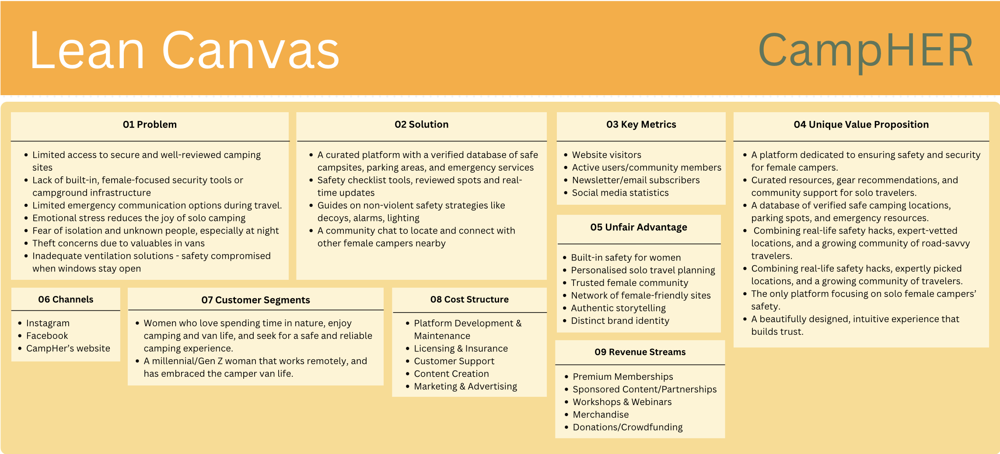

General Information
This branded website is publicly available at Campher
This website was created by…
- Ema Águas (ID: 231186)
- Greta Gáspar (ID: 234432)
Content
| # | Student ID | Value | Name and link of content |
|---|---|---|---|
| 1. | 231186 | Home page, Content, Management. | Home page |
| 2. | 234432 | Experiences, Safety tips, Marketing. | Experiences, Safety Tips |
Production
Design Elements
Colour Scheme
- #8F7E62 - The light brown signifies comfort, evokes the grounded, earthy lifestyle of van life. Creates a calming and stable visual atmosphere, aligning with the feeling of comfort and reliability that solo female travelers seek.
- #4C3921 - The dark brown signifies warmth, reliability, and a grounded connection to nature. This deep, earthy tone creates a sense of comfort and stability as well, values that are essential for solo female travelers seeking safety and reassurance on the road. It serves as a strong foundation in the color palette, anchoring the design with a trustworthy and mature visual tone.
- #F3B23F - The mustard yellow signifies adventure and curiosity. It energizes without being overwhelming, adds a bold and a positive accent that encourages action and exploration.
- #95A387 - The green signifies safety, calm, and a deep connection to nature. This muted green creates a peaceful atmosphere that aligns with the tranquil mindset many travelers seek. It reinforces the brand’s message of eco-consciousness and mindfulness, while also supporting a feeling of balance and well-being.
- The font used both for headings and body text is Pangolin, a rounded, handwritten-style typeface that adds a personal and approachable feel to CampHer’s branding. Its slightly playful curves and informal touch evoke warmth and authenticity, which are qualities essential to building a trusting and safe environment for solo female travelers.
- Pangolin communicates empowerment with softness, reflecting the balance between independence and comfort that defines Campher’s personality. This makes it especially suited for our target audience of Millennial and Gen Z women who value both strength and safety in their solo travel experiences. The handwritten aesthetic of Pangolin reinforces the brand’s community-driven nature and adds a human, friendly tone to the interface. It mirrors the way travelers might journal their experiences, making the digital space feel more like a personal companion and community than a product.
- Choosing a single font throughout the website was an intentional decision to maintain visual clarity and cohesion. By avoiding multiple font styles, we reduce distraction and help users focus on the content, enhancing usability and reinforcing CampHer’s minimalistic, user-centered design approach.
- Fixed Top Navigation Bar: A persistent horizontal menu ensures logical access to all major sections such as Home, Experiences, Safety Tips, and Corporate. This pattern was chosen to minimize cognitive load and enhance user orientation, especially on mobile devices where constant access to navigation is key.
- Grid-Based Layouts: The website uses a responsive grid structure (particularly via Bootstrap) to create a clear visual hierarchy and maintain consistent spacing between elements. This not only improves readability and scannability, but also helps users intuitively group related content, such as pairing testimonials with imagery or safety tips with icons.
- Image Carousels: Featured prominently on the homepage page, the carousels serve both emotional and functional roles. It creates an immersive, atmospheric introduction to Campher’s website while preventing content overload by allowing multiple visuals to rotate in limited space.
- Interactive Components: Elements like the chat button, login form, and testimonials section are designed to focus the user’s attention on meaningful actions.
- Buttons and images: Rounded UI elements (e.g., buttons, image frames) visually express inclusiveness and reduce harshness, which resonates with an audience that values emotional safety and approachability. Real user stories and natural imagery create emotional credibility and trust, which is vital for a brand supporting female solo travelers. Testimonials also serve as social proof, reinforcing the sense of community.
- How clearly the site communicates Campher’s brand purpose.
- Whether users could complete key tasks (e.g., explore experiences, find safety tips).
- How engaging and intuitive the navigation and visual structure felt.
- Female, 19 years old;
- Female, 20 years old;
- Female, 21years old;
- Female, 21years old.
- Find and read a user experience on the “Experiences” page.
- Locate safety advice for first-time solo travelers.
- Navigate back to the homepage.
- Sign up or engage with the “Join the Community” section.
- Describe what they believe the brand offers after viewing the homepage.
- There was no rating on the experiences page, which made it hard to capture the users attention into reading the experiences, and makes it hard for the user to recognize the urgency and importance of the shared experience right away.
- There is no searching bar in the experiences page which makes it hard for users to explore for specific experiences or doubts with key words.
- The home page doesn’t transmit the brand’s message amd purpose right away in a clear way;
- Thers no automatic “go bac to the top” button on the experiences page, which makes it harder and longer for the users to go back to the navuigation bar at the top;
- The safety tips page is not inviting enough which make the users loose interest on the information there shared.
- Redesign the homepage intro section to instantly communicate the brand’s purpose using a concise mission statement and powerful image. First impressions matter most for user engagement and brand clarity.
- Add a rating or tagging system to the Experiences page to prioritize impactful or trending stories. This will improve content discoverability and emotional relevance. It helps users find valuable content and boosts engagement.
- Implement a search bar with keyword support to help users find relevant experiences or safety advice more easily.
- Redesign the Safety Tips page with visual elements (icons, infographics, user quotes) to make the content more engaging and scannable. It improves both readability and user retention of important info.
- Include a floating “back to top” button for long-scroll pages (e.g. Experiences page) to improve usability, especially on mobile.
- User experiences
- Safety tips
- Informational videos
- Interactive engagement elements like questions
- Collaborate with influencers and vanlife communities to gain trust and improve visibility within our niche;
- Use paid promotions on Instagram and Facebook to target a wider and more specific audience;
- Shift content from purely informative to a more interactive mix including polls, quizzes, user-generated content, and safety-related challenges or prompts;
- Create short-form video content (e.g. Instagram Reels, YouTube Shorts) to present safety tips in a fun, shareable, and relatable format;
- Partner with outdoor brands (e.g. camping gear, travel safety companies) for cross-promotions and giveaways to increase interest and credibility.
- Limited access to secure and well-reviewed camping sites;
- Lack of built-in, female-focused security tools or campground infrastructure;
- Limited emergency communication options during travel;
- Emotional stress reduces the joy of solo camping;
- Fear of isolation and unknown people, especially at night;
- Theft concerns due to valuables in vans;
- Inadequate ventilation solutions - safety compromised when windows stay open.
- A curated platform with a verified database of safe campsites, parking areas, and emergency services;
- Safety checklist tools, reviewed spots and real-time updates;
- Guides on non-violent safety strategies like decoys, alarms, lighting;
- A community chat to locate and connect with other female campers nearby.
- Our ideal customer would be a millennial/Gen Z woman that works remotely, and has embraced the camper van life. Someone that likes to be connected to nature and aspires to find a community that gives her van camping tips and makes her feel safe when camping alone.
- Our target group are people that love spending time in nature; millennial and Gen Z women who enjoy camping and van life; solo female traveler's seeking a safe and reliable camping experience; environmentally conscious traveler's who value sustainable outdoor practices; women who want freedom, but not fear.
- a platform dedicated to ensuring safety and security for female campers;
- a platform with curated resources, gear recommendations, and community support for solo travelers';
- a platform with database of verified safe camping locations, parking spots, and emergency resources;
- a platform that gives combining real-life safety hacks, expert-vetted locations, and a growing community of road-savvy travelers;
- a platform that gives combining real-life safety hacks, expertly picked locations, and a growing community of travelers;
- the only platform focusing on solo female campers’ safety;
- a beautifully designed, intuitive experience that builds trust.
- Illustrated Instagram content with travel tips, destination ideas, and mood-setting visuals
- Reels, collages, and story content designed for solo female vanlifers
- Curated safety checklists, food hacks, calming travel playlists
- A relatable tone and aesthetic that promotes emotional safety
- Community-focused ideas: challenges, prompts, and tips from others
- A friendly, creative website and growing online presence
- Provide practical tools (e.g. safety advice, van tips) tailored to female needs
- Offer an inclusive visual space — no pressure, no gatekeeping
- Represent real stories and gentle encouragement rather than hype
- Reframe solo travel from something “scary” to something empowering and doable
- Use soothing visuals and music to relieve stress and anxiety around planning
- Spark excitement and curiosity about vanlife in a way that feels safe and manageable
- Give women tools to feel independent, capable, and prepared
- Cultivate an online atmosphere of calm, beauty, and self-trust
- Help users build routines, playlists, rituals that enrich the travel experience
- Create a sense of belonging for women who feel unseen in mainstream travel culture
- While most camper van rental platforms are gender-neutral, Campher builds safety into the core for women, which requires deep understanding, trust, and specific information, not easily replicated without credibility;
- Personalised travel planning for solo female traveler's demands specialised knowledge and real community insight into women's travel needs, far beyond generic route planning tools;
- Having community features for the female users to create a trusted, closed, and safe network requires time, vetting systems, and a strong brand ethos. Competitors can't fake a loyal, secure female-led community overnight;
- Our trusted network of female-friendly campsites and locations is built from user feedback, others would need years of experience and relationships to match it;
- The authenticity and emotional connection brought through real stories create a powerful bond with the audience that can’t be replicated with generic marketing;
- CampHer uses Instagram to reach Gen Z by promoting the website’s message through visually engaging content, reels, van-life inspiration, and influencer collaborations;
- CampHer uses Facebook to reach Millennials, by sharing the same message as Instagram through travel-focused groups, and tailored content that drives traffic to the website;
- CampHer’s website is the main hub for all users to explore the user’s camping experiences, interact, access safety tips, and also learn about the brand’s purpose and goal.
- By monthly following our website visitors we can measure the overall interest and reach of CampHer and tell how the brand experience is doing;
- The number of active users/community members shows engagement and loyalty, telling us how the brand experience is doing;
- By monthly following our website newsletter/email subscribers we can identify how many users want ongoing safety updates and content, which shows us how the brand experience is doing;
- By monthly following CampHer’s Instagram and Facebook statistics we can measure the overall interest and reach of CampHer and consequently tell how the brand experience is doing.
- Premium Memberships
- Sponsored Content/Partnerships
- Workshops and Webinars
- Merchandise
- Donations/Crowdfunding
- Fixed Costs (per month):
- Platform Development & Maintenance: €1,500–€3,000. (Masoner, 2025)
- Licensing & Insurance: €200–€400. (Kenton, 2024)
- Customer Support: €300–€500. (Helplama, 2024)
- Variable Costs (per month):
- Content Creation: €800–€1,200. (Vicky, 2025)
- Marketing & Advertising: €500–€1,000. (Team, 2025)
- Campher is a digital platform featuring verified campsite listings, real-time safety updates, a user forum and a community hub, educational content such as safety guides and travel tips, as well as premium memberships and event offerings. It has a strong alignment with values like empowerment, safety, accessibility, and nature. The minimalist visual identity and warm tone support a calm, trustworthy, and welcoming experience for users.
- Helplama. (2024, 23 januari). How to Calculate the Real Cost of Customer Support.
- How to Price a Membership Site in 2025 | Mighty Networks. (z.d.). Mighty Networks.
- Influencer Marketing Hub. (2025, 21 maart). Influencer rates: How much do influencers really cost in 2025?
- Kenton, W. (2024, 20 augustus). Licensing Fee: Definition, How It Works, vs. Royalty, and Examples. Investopedia.
- Masoner, L. (2025, 17 januari). How much does a website cost? (2025 guide). Forbes Advisor.
- Statista. (2025, 7 januari). Online payment preferences on apps Spain 2015.
- Team, W. (2025, 15 april). The Cost of Marketing — A Complex Marketing Budget Breakdown. WebFX.
- Vicky. (2025, 14 februari). How much does content creation cost? Twine Blog.
Campher is a brand created for Millennial and Gen Z women who value safety, nature, and community while traveling solo in camper vans. Our design language reflects these exact core values through soft but empowering visuals, intuitive UI choices, and a consistent focus on emotional connection and trust with our target audience. During our website testings the users were able to identify the brands purpose just by seeing the page’s design. This imidiate recognizition confirmed to our team that CampHer’s design successfully aligns with the brand’s target audience and identity.
Font Choices
User Interface Patterns and Layout
Brand strategy
From a content perspective, the site's tone, font, and layout support storytelling and user engagement. The use of personal stories and warm, relatable language in the headers and testimonials helps communicate the brand's message in a more genuine and engaging way.
The call-to-action structure (“Join the community,” “Start a chat”) is intentionally placed after emotionally resonant content. We used this marketing tatic to get the users to interact and get involved with the community.
The visual strategy complements Campher’s lean canvas, focusing on community-building as a key value proposition. Elements like user photos and chat features directly reflect the brand’s mission to foster connection and empowerment.
Credits
All images on the website were taken from Pexels.
Testing Report
The objective of the website testing was to evaluate:
For our testing we had 4 women from the target demographic participating (Millennial/Gen Z solo travelers):
All the website testings took place in a calm and comfortable environment. There the participants were asked to:
Findings from the website testings:
Future possible improvements:
Marketing
Context of campaign and promotional activities
CampHer is a campaign created to promote a safe, empowering, and community-driven environment for solo female van campers. The brand’s message centers on normalizing solo travel for women, while emphasizing safety, preparedness, and confidence. It speaks directly to a niche but growing community of Gen Z and Millennial women passionate about vanlife, independence, and nature-based wellness.
Based on audience insights from our Communication Media Plan, our promotional strategy focused on Instagram and Facebook (the platforms where our target audience is most active). These channels are especially relevant for lifestyle, travel, and wellness content, making them ideal for building emotional resonance and community around the Campher brand.
We posted twice a week on the Instagram feed and maintained daily story content, including:
Learning Points
Throughout the project, we gained valuable insights into social media marketing, particularly within a niche audience. One of the key takeaways was that growing a following takes more time and strategy than expected. Even though we stayed consistent with posting and maintained strong visual branding, overall engagement (likes, comments, shares) was lower than we anticipated. On the positive side, our message and visual identity were clear and well-received. Users who came across our content understood Campher’s mission and appreciated the tone and purpose. However, it became clear that visibility alone is not enough, relying only on posts didn’t generate the reach or interaction we hoped for. If we were to do it again, we would combine posts with more active outreach, including influencer collaboration, paid ads, and more interactive formats. We also realized the importance of creating content that encourages users to participate, not just consume.
Future Planning
If the project were to continue, our next step would be to expand reach and boost engagement using a more strategic approach. Based on our experience and what we learned, we would:
Professionalism
All of our campaign content was developed with care to reflect Campher’s brand identity. The images used in feed posts and on the site are high-quality, consistent in tone, and visually aligned with our earthy, nature-focused palette. Our posts maintained strong readability and coherence, using fonts and layouts that matched the brand's friendly and professional voice.
Management
Lean Canvas
Problem
Through the early-stage interviews made with potential users, we identified these key challenges:
This were the problems faced by our target group, which we solved by giving them a platform (CampHer) where we share safety tips and give a space for campers and aspiring campers to communicate with each other, share their experience, and create a community.
The interviews findings are available here: Interview findings
Solution
By offering our target audience a space on our page where they can share and see the different and various user experiences on camping, Campher helps them feeling more safe while camping alone and ends the lack of information about camping site locations, and gives another emergency coommunication option.
Customer segments
Unique value proposition
CampHer is:

Products and Services:
Pain Relievers
Gain Creators
Unfair advantage
Channels
Key metrics
Revenue streams
Model: Free basic access or premium access with tiered subscriptions of €5–€9/month or €50–€90/year. (How To Price A Membership Site in 2025 | Mighty Networks, z.d.)
By offering both options of access, CampHer encourages both community growth and monetising loyal users, while also helps us get closer to our goal of converting 5-10% of free users into paying members.
Model: Collaborations with aligned brands for posts and campaigns (€200–€1,000 per campaign). (Influencer Marketing Hub, 2025)
By focusing on brands that match our values and establishing partnership and sponsored content with them, CampHer adds value to our audience while generating income as well. CampHer creates both better engagement and long-term deals.
Model: Ticketed online sessions (€15–€50 per session, €100+ for intensive multi-day workshops). The price would depend on the depth and length of the workshop in cause.
By organising and launching monthly ticketed online workshops, CampHer monetises the brand’s expertise and builds community engagement. Tying the workshops to trending topics would be a strategy to drive urgency to the users and create more engagement.
Model: Branded products (€10–€40 per item).
By creating and selling branded products, CampHer strengthens its community identity while adding a revenue stream to the brand. Limiting the drops to community events would be a way of bringing exclusivity to the merchandising in cause, while also raising the margins.
Model: Community supported donations (average €60–€90). (Statista, 2025)
By accepting community supported donations, CampHer would be able to create a feeling of investment and shared mission with the community, pulling everyone closer.
Cost structure
Total Fixed: €2,000-€3,900.
Total Variable: €1,300-€2,200.
Total Monthly Costs: €3,300-€6,100.
Estimated monthly users: 1,000.
Cost per user: €3.30-€6.10.
Services/products
Validation of Assumptions
The name Campher fuses “Camper” with “Her”, presenting its female-centered mission while remaining playful and easy to remember. In comparison to existing platforms like "Hipcamp" or "Park4Night", CampHer stands out by being specifically tailored to women and by offering a community-driven support system instead of focusing solely on campsite listings. The goddess compass logo further enhances the brand’s differentiation by visually representing guidance and feminine empowerment, creating a strong emotional connection with the target audience.